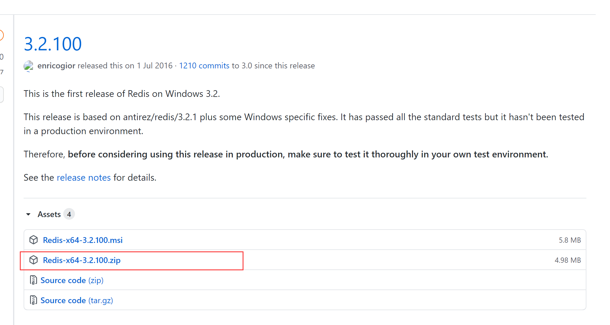

Redis介绍
什么是Redis
Redis 是一个开源（BSD许可）的、内存中的数据结构存储系统，它可以用作数据库、缓存和消息中间件，并提供多种语言的API。
优点
1.存取速度快：Redis速度非常快，每秒可执行大约110000次的设值操作，或者执行81000次的读取操作。
2.支持丰富的数据类型：Redis支持开发人员常用的大多数数据类型，例如列表、集合、排序集和散列等。
3.操作具有原子性：所有Redis操作都是原子操作，这确保如果两个客户端并发访问，Redis服务器能接收更新后的值。
4.提供多种功能：Redis提供了多种功能特性，可用作非关系型数据库、缓存中间件、消息中间件等。
Redis下载与安装
下载路径
https://github.com/microsoftarchive/redis/releases/tag/win-3.2.100

解压后放入磁盘某位置就安装成功（免安装）
安装可视化客户端

使用Spring Boot整合Redis
1.在pom文件中添加Spring Data Redis依赖启动器
<dependency>
<groupId>org.springframework.boot</groupId>
<artifactId>spring-boot-starter-data-redis</artifactId>
</dependency>
2.在全局配置文件application.properties中添加Redis数据库连接配置
spring:
redis:
host: 127.0.0.1
port: 6379
password:
3.编写实体类
package com.wukongnotnull.domain;/*
author: 悟空非空也（B站/知乎/公众号）
*/
import lombok.Data;
import org.springframework.data.annotation.Id;
import org.springframework.data.redis.core.RedisHash;
import org.springframework.data.redis.core.index.Indexed;
import java.util.List;
@Data
@RedisHash(value = "people")
public class Person {
@Id
private String id;
@Indexed
private String firstName;
@Indexed
private String lastName;
private Address address;
private List<Family> familyList;
}
package com.wukongnotnull.domain;/*
author: 悟空非空也（B站/知乎/公众号）
*/
import lombok.Data;
import org.springframework.data.redis.core.index.Indexed;
@Data
public class Address {
@Indexed
private String nation;
@Indexed
private String village;
}
package com.wukongnotnull.domain;/*
author: 悟空非空也（B站/知乎/公众号）
*/
import lombok.Data;
import org.springframework.data.redis.core.index.Indexed;
@Data
public class Family {
@Indexed
private String type;
@Indexed
private String name;
}
4.编写Repository接口
package com.wukongnotnull.repository;/*
author: 悟空非空也（B站/知乎/公众号）
*/
import com.wukongnotnull.domain.Person;
import org.springframework.data.repository.CrudRepository;
public interface PersonRepository extends CrudRepository<Person,String> {
Person findPersonByFirstName(String firstName);
@Override
<S extends Person> S save(S entity);
}
5.编写单元测试进行接口方法测试以及整合测试
package com.wukongnotnull.repository;
import com.wukongnotnull.domain.Address;
import com.wukongnotnull.domain.Family;
import com.wukongnotnull.domain.Person;
import org.junit.jupiter.api.Test;
import org.springframework.beans.factory.annotation.Autowired;
import org.springframework.boot.test.context.SpringBootTest;
import java.util.ArrayList;
import java.util.List;
/*
author: 悟空非空也（B站/知乎/公众号）
*/
@SpringBootTest
class PersonRepositoryTest {
@Autowired
private PersonRepository personRepository;
@Test
void findPersonByFirstName() {
System.out.println(personRepository.findPersonByFirstName("空"));
}
@Test
void save() {
Person person = new Person();
person.setId("002");
person.setLastName("悟");
person.setFirstName("空");
Address address = new Address();
address.setNation("中国");
address.setVillage("南京");
person.setAddress(address);
List<Family> familyList = new ArrayList<>();
Family father = new Family();
father.setType("father");
father.setName("杨康");
Family mother = new Family();
mother.setType("mother");
mother.setName("穆念慈");
familyList.add(father);
familyList.add(mother);
person.setFamilyList(familyList);
System.out.println(personRepository.save(person));
}
}
作者: 悟空非空也
链接: https://wukongnotnull.github.io/spring-boot-quickstart-wukongnote/data-access/integrate-redis.html
来源: 悟空非空也
本文原创发布于「悟空非空也」,转载请注明出处,谢谢合作!